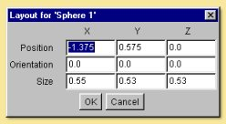
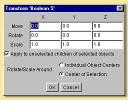
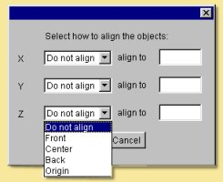
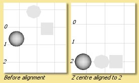

|  |
Any of the shown fields can be altered allowing accurate definition of the object's position, orientation and size. Simply click in the relevant box, type in the new value and click on 'OK' to action the change. |
|  | By default, transformations are also performed on children of the selected object and this can be
turned off from this dialogue box. It is also possible to perform the rotation of a collection
of objects as if they were separate objects (i.e. around Individual Object Centres) or,
by default, around the centre of the collection. |
 is object scaling. Clicking on this and then dragging a handle scales in
the appropriate axis. Pressing <shift> while dragging maintains the relative dimensions
of the object, while pressing <ctrl> keeps the centre of the object fixed. Both can be pressed
simultaneously to maintain shape and centre. Double clicking brings up a dialogue box to switch
off/on translation of non-selected children objects and allows for the centres of objects to
remain fixed or to move in relation to the scaling.
is object scaling. Clicking on this and then dragging a handle scales in
the appropriate axis. Pressing <shift> while dragging maintains the relative dimensions
of the object, while pressing <ctrl> keeps the centre of the object fixed. Both can be pressed
simultaneously to maintain shape and centre. Double clicking brings up a dialogue box to switch
off/on translation of non-selected children objects and allows for the centres of objects to
remain fixed or to move in relation to the scaling.|  | Objects can be aligned in any axis and with respect to their front, centre, back or origin.
In addition the objects can be positioned at any particular point along the axis by entering a
value in the 'align to' box. For example, selecting Z centre align to 2 will move the centres
of all selected objects to Z=2 as below:  |